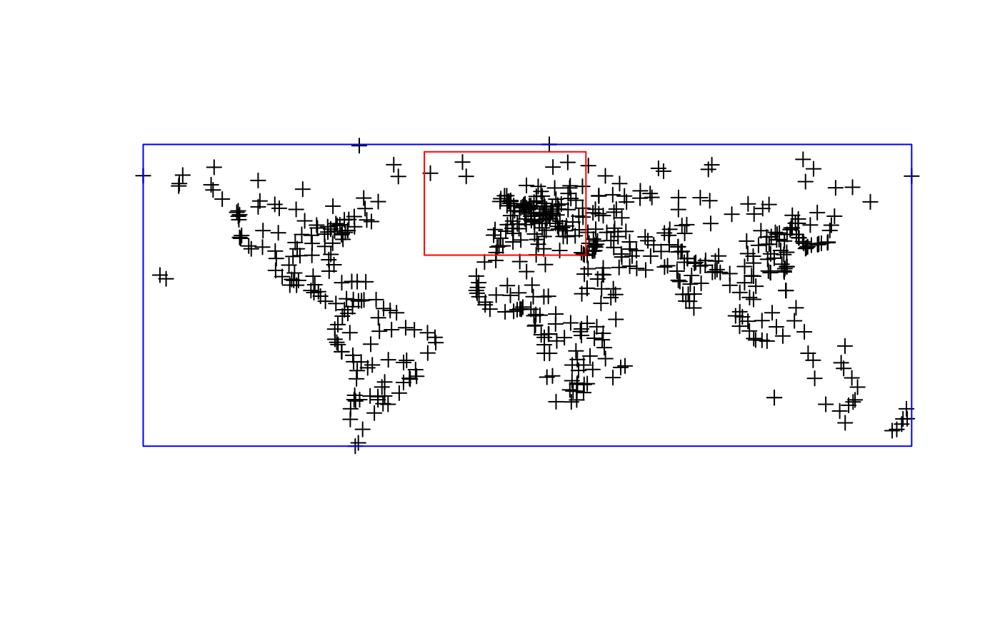

bbox2SP.RdConverts a bounding box into a SpatialPolygons object.
bbox2SP(n,s,w,e,bbox=NA,proj4string=CRS("+init=epsg:4326"))
| n | the top north latitude |
|---|---|
| s | the bottom south latitude |
| w | the most western longitude |
| e | the most eastern longitude |
| bbox | a bounding box 2 x 2 matrix as produced by |
| proj4string | a coordinate reference system as defined in |
This function converts a set of coordinates limiting a bounding box into a SpatialPolygons. It can be used for instance to clip a subset of a larger spatial object (e.g. using gIntersection)
An object of SpatialPolygons class.
#> #> #> #> #> #> #> #> #> #> #>if (run) { cities <- readOGR(dsn=system.file("vectors", package = "rgdal")[1], layer="cities") n<-75 s<-30 w<--40 e<-32 myPoly<-bbox2SP(n,s,e,w) }#> OGR data source with driver: ESRI Shapefile #> Source: "/home/rsb/lib/r_libs/rgdal/vectors", layer: "cities" #> with 606 features #> It has 4 fields #> Integer64 fields read as strings: POPULATIONif (run) { bb<-bbox(cities) myPoly<-bbox2SP(bbox=bb,proj4string=CRS(proj4string(cities))) plot(myPoly,add=TRUE,border="blue") }#> Warning: CRS object has comment, which is lost in output